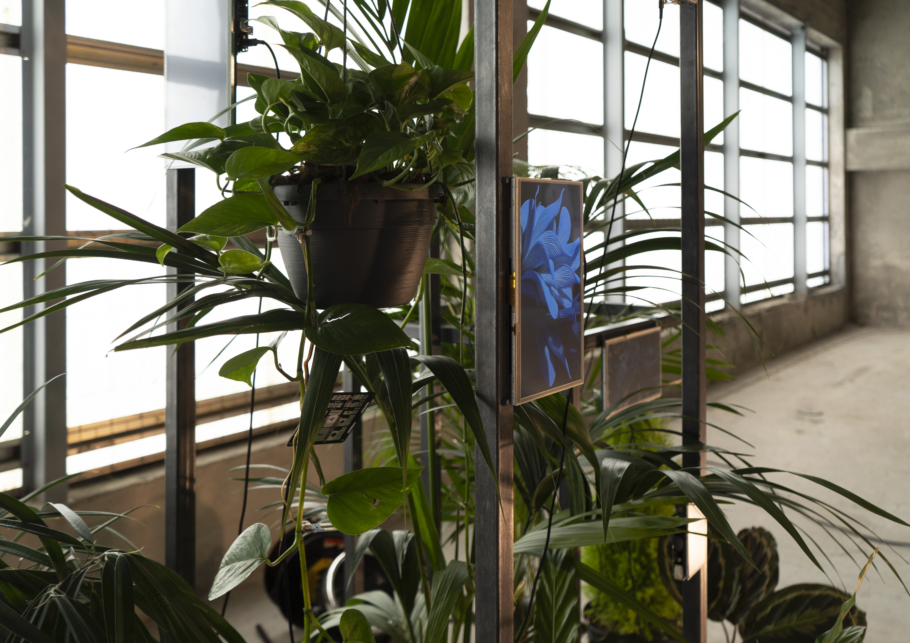
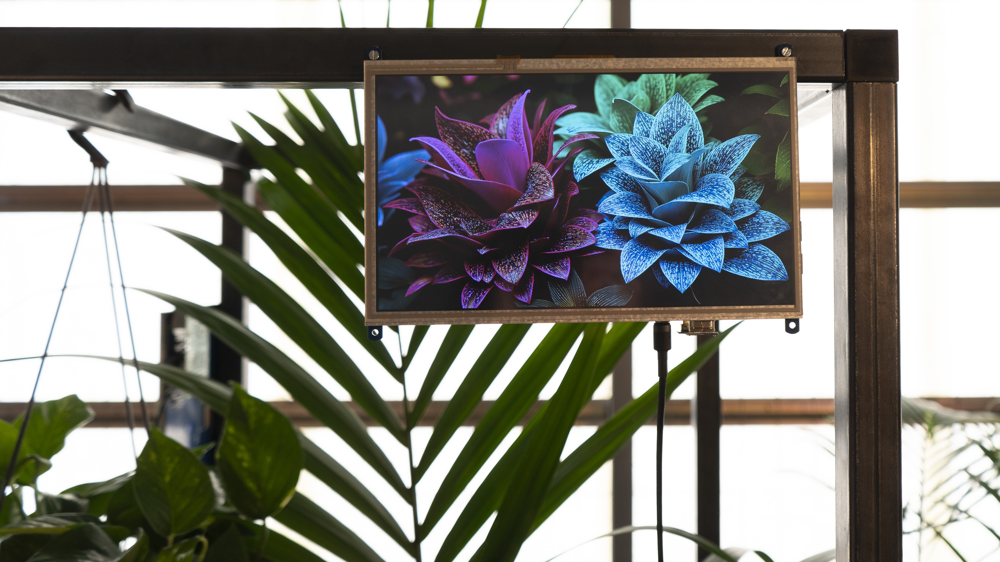
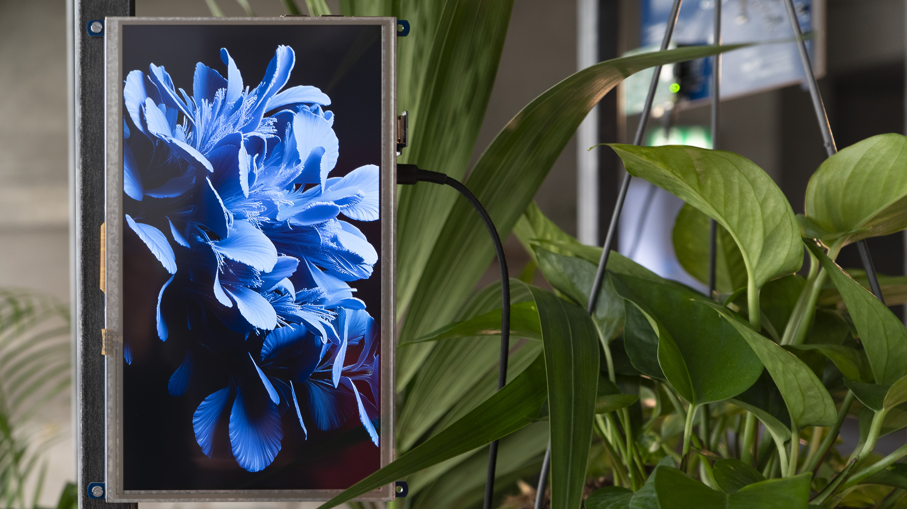

← All works
Symbiosis
Symbiosis is an interactive installation in which plants become the protagonists of visual and sound creation. Sensors measure soil moisture and movement, translating natural signals into dynamic images and ambient music. Each plant shapes its own digital representation in real time, revealing new rhythms and behaviours. The installation creates an ecosystem in which technology and living elements meet, forming a bridge between the digital and the organic. Working in harmony, they transform the plants into the true artists of the installation.




